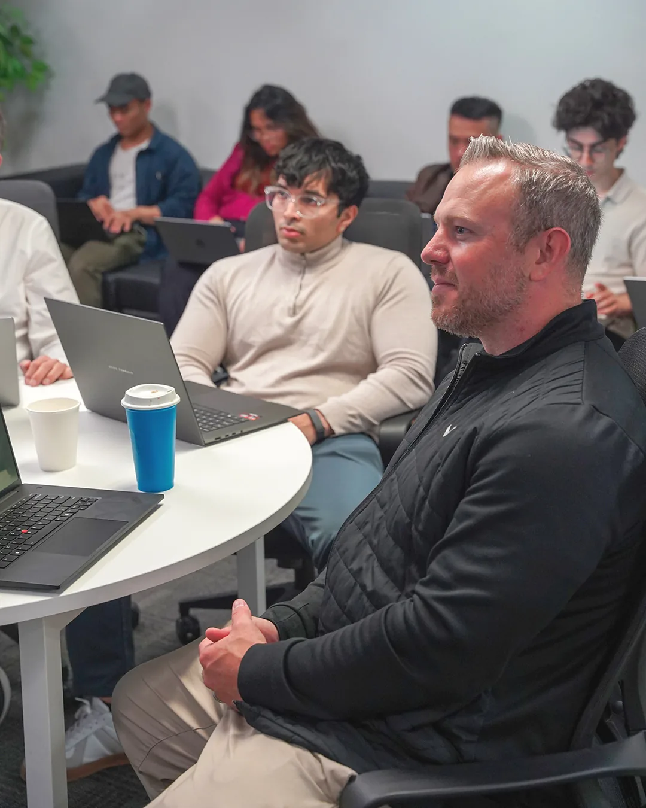

Readiness & Adoption
Prioritize the opportunities worth pursuing.
See the assessment step- Practical output
- A prioritized roadmap
Improve service, reduce repetitive work, and give your team the skills to put AI to use.
Choose the support that matches your starting point.
Prioritize the opportunities worth pursuing.
See the assessment stepWork alongside Forward Deployed Engineers (FDEs).
See the implementation stepEquip the people who will use and maintain the solution.
View learning formats & pricingYour AI champion is the solution owner. Your organization makes the acceptance decision at every stage.
AICWorkflow analysis and roadmap
Your organizationSponsor and staff input
AICScope, data, and success measures
Your organizationApprove scope and access
AICConfigure and test a selected workflow only where needed
Your organizationAgree go / no-go criteria
AICIntegration, testing, and coaching
Your organizationValidate results and adopt
AICDocumentation and upskilling
Your organizationAssign an ongoing service owner
One-month roadmap
Three-month implementation
Choose the learning focus that fits each role.
| Audience | Learning focus | Practical output |
|---|---|---|
| Management | Priorities, readiness, and governance | Adoption plan with an accountable owner |
| General staff | Enabling AI functions across multiple workflows | Workflow review and optimization |
| Technical / FDE | Agents, integrations, and deployment | Tested work sample and handover plan |
$1,999 CAD per participant · 2027 package
A half-day masterclass plus three two-hour workshops. Individual sessions remain separately purchasable.
$20 CAD per month · Learning Hub access
Ongoing learning and upskilling resources.
Applied research for Healthcare, Education, and Sustainability. Pre-developed solutions are available for downloading and testing through the AI compute network.
Deploy workflow, data, and business solutions in a secure setting.
Deployed FDEs use applied research and best practices for model and workflow design, performance testing, and industry benchmarking. Compare quality, reliability, and operating costs.
External technical teams receive guidance on acceptance criteria, safeguards, and continuing support.
Tell us what your organization wants to achieve. Our team will help you identify the right starting point.
Corporate AI Adoption · 2027 program model
A practical process, with decisions in your hands.
